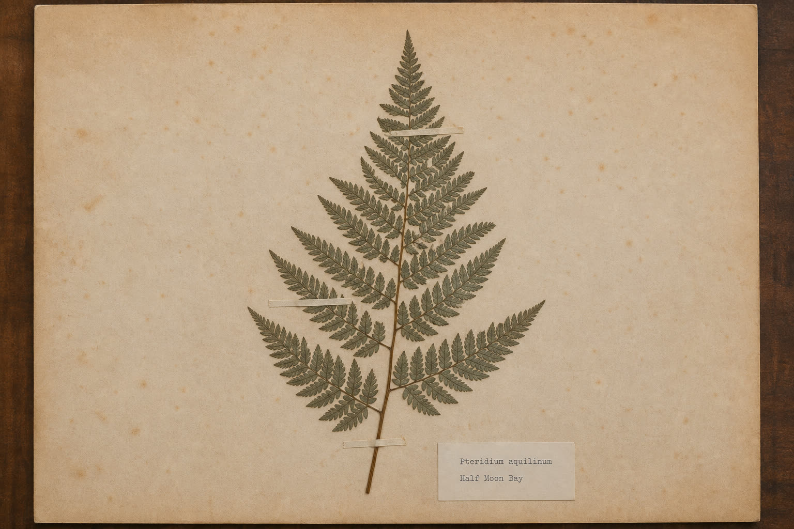
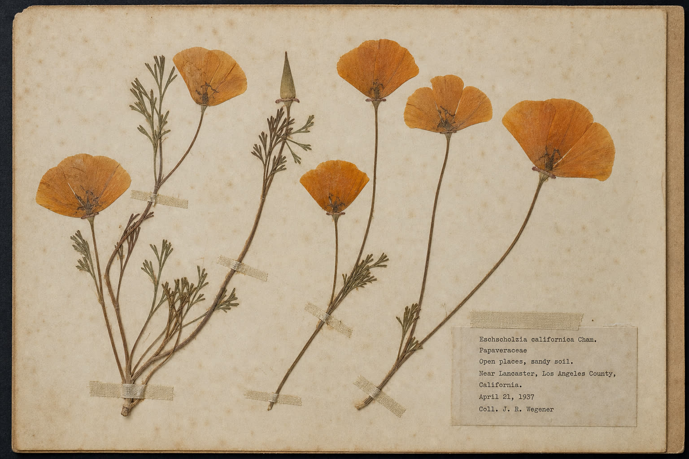
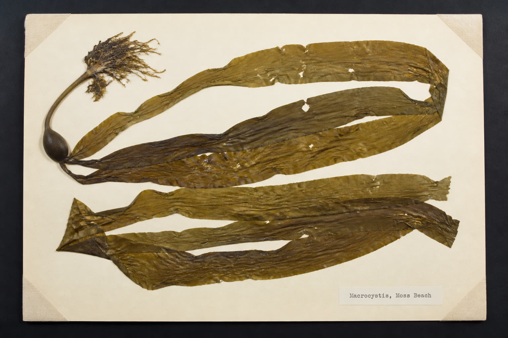
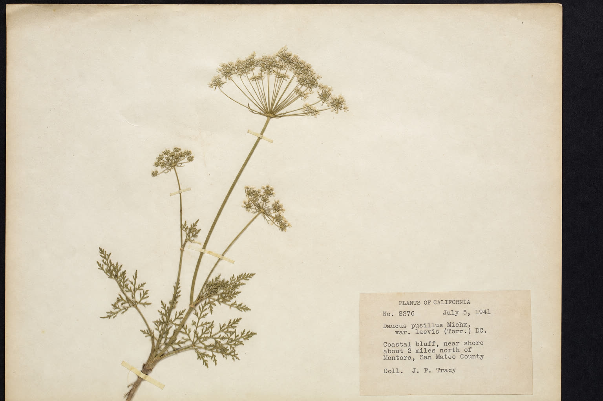

Coastside botanical rooms Half Moon Bay, California
Folio 01 / coastside studies
Four sheets, left whole.
Each pressing is treated as the object: plant, rag, linen tape, typed slip. Collector labels already fixed to older sheets stay in place; the field notes beside them belong to this folio.
01 / 04
Bracken
Pteridium aquilinum
Canyon shade Half Moon Bay

Rag / cream / foxed / three linen tapes
Field breakdown
Latin
Pteridium aquilinum (L.) Kuhn
Found
Canyon shade, Half Moon Bay
Method
One frond, laid once. Leave the sheet under weight so the pinnae keep their plane.
02 / 04
California poppy
Eschscholzia californica
Coastal bluff Half Moon Bay

Old herbarium stock / stems taped / petals free
Field breakdown
Latin
Eschscholzia californica Cham.
Found
Coastside bluff, Half Moon Bay
Method
Press the same day or the orange goes dull. Tape the stems and leave the petals untouched.
03 / 04
Giant kelp
Macrocystis pyrifera
Tide line Moss Beach

Heavy sheet / photo corners / salt in the fibers
Field breakdown
Latin
Macrocystis pyrifera (L.) C. Agardh
Found
Tide line, Moss Beach / Pillar Point
Method
Rinse once. Fold the blades to fit, then press under weight. The bladder keeps its dark.
04 / 04
Yarrow
Achillea millefolium
Coastal prairie Half Moon Bay

Cream card / stems taped / flower heads free
Field breakdown
Latin
Achillea millefolium L.
Found
Coastal prairie, Half Moon Bay / Montara
Method
The umbels dry almost white. The feathery leaves take longer than the flower heads.